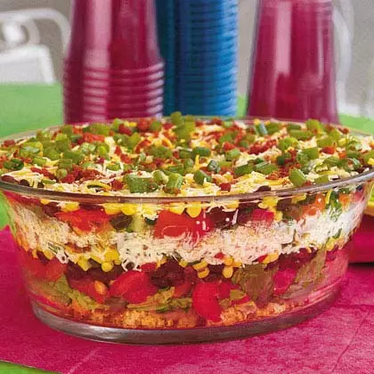

Dianne’s Southwestern Cornbread Salad

Dianne’s Southwestern Cornbread Salad is as colorful as it is delicious.
- ⏲️ Prep time: 30 min
- 🍳 Cook time: 15 min
- 🍽️ Servings: 10-12
- 🥶 Chill: 2 hrs
Ingredients
- 1 (6-ounce) package Mexican cornbread mix
- 1 (1-ounce) envelope buttermilk Ranch salad dressing mix
- 1 small head romaine lettuce, shredded
- 2 large tomatoes, chopped
- 1 (15-ounce) can black beans, rinsed and drained
- 1 (8-ounce) package shredded Mexican four-cheese blend
- 6 bacon slices, cooked and crumbled
- 5 green onions, chopped
Directions
- Prepare cornbread according to package directions, cool, and crumble. Then set aside.
- Prepare salad dressing according to package directions.
- Layer a large bowl with half each of cornbread, lettuce, and the next 6 ingredients: spoon half of dressing evenly over top. Repeat layers with remaining ingredients and dressing. Cover and chill at least 2 hours.